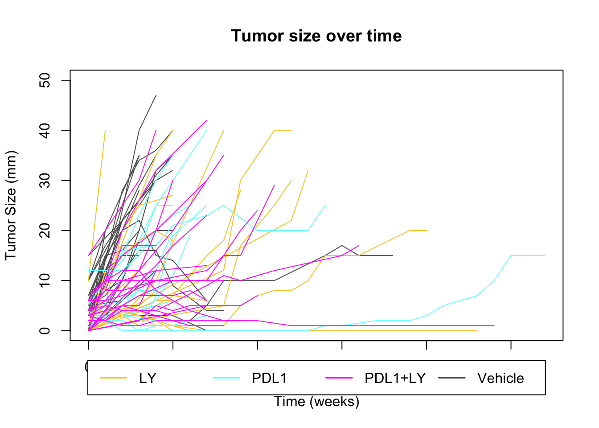
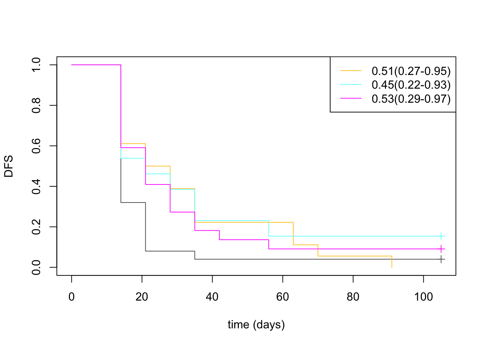

Chapter 2 Cohort characteristics
Below we assess summary statistics on clinico-pathological features of this data set. This includes information on:
- treatment
- tumor size
- growth rates (mm/week)
- number of tumors per rat
Cdata=xlsx::read.xlsx("../metadata/Extended Data Table1.xlsx", sheetIndex=1)
Cdata$NewID[which(duplicated(Cdata$NewID)==T)]
## [1] NA NA NA
DT::datatable(Cdata[ ,1:20],rownames=F, class='cell-border stripe',
extensions="Buttons", options=list(dom="Bfrtip", buttons=c('csv', 'excel')))2.1 Size information
We have two cohorts, the characterisation and progression cohorts. Below is a plot of the size distribution in these two cohorts:
par(mfrow=c(1,2))
X1a=median(Cdata$Tumor.diameter.sac.mm[which(Cdata$Cohort=="Characterisation")], na.rm = T)
hist(Cdata$Tumor.diameter.sac.mm[which(Cdata$Cohort!="Characterisation")], breaks=15,
main=sprintf("characterisation sizes Median %s", X1a),
xlab="size at sac")
X2a=median(Cdata$Tumor.diameter.sac.mm[which(Cdata$Cohort=="Progression")], na.rm=T)
hist(Cdata$Tumor.diameter.sac.mm[which(Cdata$Cohort=="Progression")], breaks=15,
main=sprintf("progression sizes Median %s", X2a),
xlab="size at sac")
Note that in the characterisation cohort, samples are selected for SAC at different time points:
#pdf("~/Desktop/S1B_size_oveR_time.pdf", width=6, height=5)
am1=lm(Cdata$Tumor.diameter.sac.mm[which(Cdata$Cohort=="Characterisation")]~
Cdata$Time.NMU2Sac[which(Cdata$Cohort=="Characterisation")])
plot(jitter(Cdata$Time.NMU2Sac[which(Cdata$Cohort=="Characterisation")]),
jitter(Cdata$Tumor.diameter.sac.mm[which(Cdata$Cohort=="Characterisation")]),
xlab="Time from NMU to sac (days)", ylab="Tumor diameter (mm)",
col=factor(Cdata$Char.Cohort.Batch[which(Cdata$Cohort=="Characterisation")]), pch=19, main="characterisation: size over time")
text(jitter(Cdata$Time.NMU2Sac[which(Cdata$Cohort=="Characterisation")])+5,
jitter(Cdata$Tumor.diameter.sac.mm[which(Cdata$Cohort=="Characterisation")])+1,
Cdata$NewID[which(Cdata$Cohort=="Characterisation")], cex=0.7)
abline(am1)
legend("topright", levels(factor(Cdata$Char.Cohort.Batch)), col=c(1:4), lwd=2)
Figure 2.1: growth of tumors over time
#dev.off()
DT::datatable(cbind(Cdata$Time.NMU2Sac[which(Cdata$Cohort=="Characterisation")],
Cdata$Tumor.diameter.sac.mm[which(Cdata$Cohort=="Characterisation")],
Cdata$Char.Cohort.Batch[which(Cdata$Cohort=="Characterisation")]), rownames=F, class='cell-border stripe', extensions="Buttons", options=list(dom="Bfrtip", buttons=c('csv', 'excel'))) Figure 2.1: growth of tumors over time
Plot of number of tumors per rat
Nx1=table(Cdata$Rat_ID[which(Cdata$Cohort=="Characterisation")])
X2=Cdata$Char.Cohort.Batch[match(names(Nx1), Cdata$Rat_ID)]
t2temp=data.frame(count=as.numeric(Nx1), cohort=X2)
beeswarm(jitter(as.vector(Nx1))~X2, col=c(1:4), pch=19)Figure 2.2: Number of tumors per rat in each cohort
DT::datatable(t2temp, rownames=F, class='cell-border stripe',
extensions="Buttons", options=list(dom="Bfrtip", buttons=c('csv', 'excel')))Figure 2.2: Number of tumors per rat in each cohort
2.2 Calculating growth rates
In this section, we estimate the growth rates of the samples: Below is a plot of the tumor size per week for each recorded tumor, color-coded according to treatment. Time is measured at the first time point at which a tumor is palpated. Spontaneous large tumors are assumed to have a tumor size of 0 or 1 one week prior to palpating.
GrowthRaw=read.csv("../metadata/growth_rates_0915.csv")
colnames(GrowthRaw)[-1]=substr(colnames(GrowthRaw)[-1], 2, 10)
colnames(GrowthRaw)=gsub("\\.", "-", colnames(GrowthRaw))
CTreat=Cdata$Treatment[match(colnames(GrowthRaw), gsub("_", "", Cdata$TumorID))]
CTreat=ColMerge[match(CTreat, rownames(ColMerge)) ,1]
Cgrowth=Cdata$Tumor.growth.status[match(colnames(GrowthRaw), gsub("_", "", Cdata$TumorID))]
#pdf(sprintf("rslt/Clinicopath/summary_growth_plots_%s.pdf", Sys.Date()), width=8, height=8)
par(xpd=T)
plot(NA, xlim=c(0, 27), ylim=c(0, 50), ylab="Tumor Size (mm)", xlab="Time (weeks)", main="Tumor size over time")
for (i in 2:ncol(GrowthRaw)){
x1=which(!is.na(GrowthRaw[, i]))
lines(GrowthRaw[x1, 1], GrowthRaw[x1, i], col=CTreat[i])
}
legend("bottom", inset = c(-0.2, -0.2), rownames(ColMerge), col=ColMerge[ ,1], lwd=2, horiz = T)
ax1=colnames(GrowthRaw)[-1][which(CTreat[-1]=="Unknown")]
bx1=Cdata$TumorID[!gsub("_", "", Cdata$TumorID)%in%colnames(GrowthRaw)]
bx1=bx1[which(bx1%in%Cdata$TumorID[Cdata$Tumor.growth.status%in%c("stable", "growing")])]We can also separate the above plot into separate treatments:
#Plot the above into quadrants based on different treatments:
par(mfrow=c(2,2))
xn=levels(factor(names(CTreat)))
x2=CTreat[xn]
for (j in 1:4){
indx=which(CTreat==x2[j])
indx=setdiff(indx, 1)
plot(NA, xlim=c(0, 27), ylim=c(0, 50), ylab="Tumor Size (mm)", xlab="Time (weeks)", main=xn[j])
for (i in indx){
x1=which(!is.na(GrowthRaw[, i]))
lines(GrowthRaw[x1, 1], GrowthRaw[x1, i], col=CTreat[i])
text(GrowthRaw[x1[length(x1)], 1], GrowthRaw[x1[length(x1)], i], colnames(GrowthRaw)[i], cex=0.6)
}
}
#dev.off()
colnames(GrowthRaw)=Cdata$NewID[match(colnames(GrowthRaw), gsub("_", "", Cdata$TumorID))]
TreatType=Cdata$Treatment[match(colnames(GrowthRaw),Cdata$NewID)]
GrowthRaw2=rbind(TreatType, GrowthRaw)
colnames(GrowthRaw2)[1]="Time(weeks)"
DT::datatable(GrowthRaw2, rownames=F, class='cell-border stripe',
extensions="Buttons", options=list(dom="Bfrtip", buttons=c('csv', 'excel')))Notably, there are a few samples which grow but then regress. These are plotted below
UturnSamp=c("6RB","11ND", "8LD", "10LD", "3NB" )
tmp=Cdata$NewID[match(UturnSamp, gsub("_","", Cdata$TumorID))]
mx=match(tmp, colnames(GrowthRaw))
#pdf("~/Desktop/S5-inflammatory-samples-growth.pdf", height=5, width = 5)
plot(NA, xlim=c(0, 10), ylim=c(0, 30), ylab="Tumor Size (mm)", xlab="Time (weeks)", main="Inflammatory samples")
for (i in 1:length(mx)){
x1=which(!is.na(GrowthRaw[, mx[i]]))
lines(GrowthRaw[x1, 1], GrowthRaw[x1, mx[i]], col=CTreat[mx[i]])
text(GrowthRaw[x1[length(x1)], 1], GrowthRaw[x1[length(x1)], mx[i]],
colnames(GrowthRaw)[mx[i]], cex=0.6)
}
Figure 2.3: inflammatory growth profiles
GrowthRaw3=GrowthRaw2[ ,c(1, mx)]
DT::datatable(GrowthRaw3, rownames=F, class='cell-border stripe',
extensions="Buttons", options=list(dom="Bfrtip", buttons=c('csv', 'excel')))Figure 2.3: inflammatory growth profiles
These tumors doesn’t have growth rate data: 17N_B.
We can then compute the growth rate for the above samples by considering the change in size over a given period of time using a linear regression model. Below is the histogram of growth rates, and we see a separation at approximately 2mm/week:
GR=sapply(2:ncol(GrowthRaw), function(x) lm(GrowthRaw[, x]~GrowthRaw[, 1])$coefficients[2])
names(GR)=colnames(GrowthRaw)[-1]
d1=data.frame(growthrate=GR, treatment=names(CTreat[-1]), growth=Cgrowth[-1], color=CTreat[-1],
sample=names(GR))
d1$treatment=factor(d1$treatment, levels=c( "PDL1+LY", "PDL1", "LY", "Vehicle"))
Nweeks=sapply(2:ncol(GrowthRaw), function(x) max(which(!is.na(GrowthRaw[ , x]))))
names(Nweeks)=names(GR)
d1$Nweeks=Nweeks[match(d1$sample, names(Nweeks))]
d1$Time.Tum2Sac=Cdata$Time.Tumor2Sac[match(d1$sample, Cdata$NewID)]
d1$Time.NMU2Sac=Cdata$Time.NMU2Sac[match(d1$sample, Cdata$NewID)]
d1$tum.size=Cdata$Tumor.diameter.sac.mm[match(d1$sample, Cdata$NewID)]
d1$growthrate_cutoff2=ifelse(d1$growthrate>=2, "growing", "stable")
#pdf(sprintf("rslt/Clinicopath/summary_growth_rates_%s.pdf", Sys.Date()), width=8, height=6)
ggplot(d1, aes(x=growthrate, fill=treatment))+geom_histogram(colour="black")+theme_bw()+geom_vline(aes(xintercept=2), colour="grey45", linetype="dashed")+scale_fill_manual(values=ColMerge[ ,1])Figure 2.4: Histogram of growth rates
Based on the above distribution, a cut-off of 2mm/week may be an optimal cut-off to separate growing and stable tumors. Below are growth rates of tumors under different treatments:
pv1=sapply(levels(d1$treatment)[1:3], function(x)
wilcox.test(d1$growthrate[which(d1$treatment==x)], d1$growthrate[which(d1$treatment=="Vehicle")])$p.value)
d1$treatment=factor(d1$treatment, levels=c("Vehicle", "PDL1", "LY","PDL1+LY"))ggplot(d1, aes(x=treatment, y=growthrate, col=treatment))+geom_boxplot()+geom_jitter()+
scale_color_manual(values=ColMerge[ ,1])+theme_bw()+ggtitle(paste(paste(names(pv1), round(pv1, 2)), collapse=";"))
Figure 2.5: Growth rate with respect to treatment
DT::datatable(d1, rownames=F, class='cell-border stripe',
extensions="Buttons", options=list(dom="Bfrtip", buttons=c('csv', 'excel')))Figure 2.5: Growth rate with respect to treatment
We can calculate the p.values below, using a wilcox test. The growth rates comparing the treatment to the controls are:
print('LY samples')
## [1] "LY samples"
wilcox.test(d1$growthrate[d1$treatment=="LY"], d1$growthrate[d1$treatment=="Vehicle"])
##
## Wilcoxon rank sum test with continuity correction
##
## data: d1$growthrate[d1$treatment == "LY"] and d1$growthrate[d1$treatment == "Vehicle"]
## W = 150.5, p-value = 0.06847
## alternative hypothesis: true location shift is not equal to 0
print('PDL1 samples')
## [1] "PDL1 samples"
wilcox.test(d1$growthrate[d1$treatment=="PDL1"], d1$growthrate[d1$treatment=="Vehicle"])
##
## Wilcoxon rank sum test with continuity correction
##
## data: d1$growthrate[d1$treatment == "PDL1"] and d1$growthrate[d1$treatment == "Vehicle"]
## W = 90, p-value = 0.02673
## alternative hypothesis: true location shift is not equal to 0
print('PDL1+LY samples')
## [1] "PDL1+LY samples"
wilcox.test(d1$growthrate[d1$treatment=="PDL1+LY"], d1$growthrate[d1$treatment=="Vehicle"])
##
## Wilcoxon rank sum test with continuity correction
##
## data: d1$growthrate[d1$treatment == "PDL1+LY"] and d1$growthrate[d1$treatment == "Vehicle"]
## W = 133.5, p-value = 0.002644
## alternative hypothesis: true location shift is not equal to 0This shows a smaller growth-rate in PDL1 single and double treated cases compared to the vehicles.
Overall the distribution of growing vs stable tumors is shown below:
table(ifelse(d1$growthrate>=2, "grow", "stable"))
##
## grow stable
## 47 31
head(d1)
## growthrate treatment growth color sample Nweeks Time.Tum2Sac Time.NMU2Sac tum.size growthrate_cutoff2
## P5T1 3.54285714 Vehicle growing #5D5D5D P5T1 6 41 84 20 growing
## P5T2 15.00000000 Vehicle growing #5D5D5D P5T2 2 41 84 15 growing
## P5T3 20.00000000 Vehicle growing #5D5D5D P5T3 2 41 84 20 growing
## P4T1 11.70000000 Vehicle growing #5D5D5D P4T1 5 30 77 47 growing
## P7T1 0.02459016 Vehicle stable #5D5D5D P7T1 8 49 127 6 stable
## P7T2 -0.15163934 Vehicle stable #5D5D5D P7T2 8 49 127 3 stableWe can replot the previous graphs according to growth, and color code according to whether it is a fast or slow growing tumor
par(xpd=T)
#Plot the above into quadrants based on different treatments:
par(mfrow=c(2,2))
for (j in 1:length(xn)){
indx=which(names(CTreat)==xn[j])
indx=setdiff(indx, 1)
plot(NA, xlim=c(0, 27), ylim=c(0, 50), ylab="Tumor Size (mm)", xlab="Time (weeks)", main=paste("Redone", xn[j]))
for (i in indx){
x1=which(!is.na(GrowthRaw[, i]))
lines(GrowthRaw[x1, 1], GrowthRaw[x1, i], col=ifelse(d1$growthrate_cutoff2[i-1]=="growing", ColMerge[j, 1], ifelse(d1$growthrate_cutoff2[i-1]=="stable", ColMerge[j, 2], "black")), type="o", pch=19)
text(GrowthRaw[x1[length(x1)], 1], GrowthRaw[x1[length(x1)], i], colnames(GrowthRaw)[i], cex=0.6)
}
}Figure 2.6: Overview of growth rates of immunotherapy treated tumors with fast and slow growing indicated
As a sanity check, compare these growth rates with differences in tumour size at different time points:
- comparing the growth rate according to classifications (growing, stable)
- tumor size at time of sacrifice
- rate of tumor development from the time of NMU injection
For all comparisons, wilcox rank sum test to assess differences was used
par(mfrow=c(1,3))
boxplot(d1$growthrate~d1$growthrate_cutoff2, main="growth rate, new growth", las=2, ylab="tumor growth rate (mm/week)", xlab="")
x1=wilcox.test(d1$growthrate~d1$growthrate_cutoff2)$p.value
## Warning in wilcox.test.default(x = c(3.54285714285714, 15, 20, 11.7, 5.8, : cannot compute exact p-value with ties
text(1.5, 20, paste("wilcox p =", round(x1, 3)))
boxplot(d1$tum.size~d1$growthrate_cutoff2, main="tum size at sac, new growth", las=2, ylab="Tumor diameter (mm)", xlab="")
x1=wilcox.test(d1$tum.size~d1$growthrate_cutoff2)$p.value
## Warning in wilcox.test.default(x = c(20, 15, 20, 47, 30, 12, 32, 35, 4, : cannot compute exact p-value with ties
text(1.5, 40, paste("wilcox p =", round(x1, 3)))
boxplot(d1$tum.size/d1$Time.NMU2Sac~d1$growthrate_cutoff2, main="rate NMU2SAC", las=2, ylab="growth rate from NMU injection (mm/wk)", xlab="")
x1=wilcox.test(d1$tum.size/d1$Time.NMU2Sac~d1$growthrate_cutoff2)$p.value
## Warning in wilcox.test.default(x = c(0.238095238095238, 0.178571428571429, : cannot compute exact p-value with ties
text(1.5, 0.6, paste("wilcox p =", round(x1, 3)))
Is there an association with treatment? Calculate below using chi-squared test:
# print('new data outcome')
a3=chisq.test(table(factor(d1$treatment), d1$growthrate_cutoff2))
a3
##
## Pearson's Chi-squared test
##
## data: table(factor(d1$treatment), d1$growthrate_cutoff2)
## X-squared = 7.7366, df = 3, p-value = 0.05178
ContTable(table((d1$treatment), d1$growthrate_cutoff2), "new rates", T, "growth", "treatment")
Figure 2.7: Contingency tables
We can also compare these values by assessing any I/O vs the control, as well as specific treatment arms
par(mfrow=c(2,2))
ContTable(table((d1$treatment!="Vehicle"), d1$growthrate_cutoff2), "new rates", T, "growth", "treatment")
for (i in levels(d1$treatment)[2:4]){
ContTable(table(factor(d1$treatment[d1$treatment%in%c("Vehicle", i)]),
d1$growthrate_cutoff2[d1$treatment%in%c("Vehicle", i)]), "new rates", T, "growth", "treatment")
}
Overall, it appears that there is an association between growth rate and treatment
2.3 KM curves for survival
Rats were given a treatment once tumors were first palpated. Below, we report a cox proportional model for time from which tumors were first detectd to date of sacrifice. Since subtype information is not available for all samples (only the ones that we have managed to profile, exclude this data)
Pdat=Cdata[which(Cdata$Cohort=="Progression"), ]
ev=rep(1,nrow(Pdat) )
ev[which(Pdat$Time.Tumor2Sac.days>110)]=0
days2=ifelse(Pdat$Time.Tumor2Sac.days>100, 110, Pdat$Time.Tumor2Sac.days)
ssurv=Surv(days2, ev)
Pdat$Treatment=factor(Pdat$Treatment, levels=c("Vehicle", "LY", "PDL1","PDL1+LY"))
ax=coxph(ssurv~Pdat$Treatment)
summary(ax)
## Call:
## coxph(formula = ssurv ~ Pdat$Treatment)
##
## n= 84, number of events= 77
##
## coef exp(coef) se(coef) z Pr(>|z|)
## Pdat$TreatmentLY -0.7103 0.4915 0.3364 -2.112 0.0347 *
## Pdat$TreatmentPDL1 -0.4506 0.6373 0.3237 -1.392 0.1639
## Pdat$TreatmentPDL1+LY -0.4650 0.6281 0.3045 -1.527 0.1267
## ---
## Signif. codes: 0 '***' 0.001 '**' 0.01 '*' 0.05 '.' 0.1 ' ' 1
##
## exp(coef) exp(-coef) lower .95 upper .95
## Pdat$TreatmentLY 0.4915 2.035 0.2542 0.9503
## Pdat$TreatmentPDL1 0.6373 1.569 0.3379 1.2017
## Pdat$TreatmentPDL1+LY 0.6281 1.592 0.3458 1.1409
##
## Concordance= 0.55 (se = 0.037 )
## Likelihood ratio test= 4.93 on 3 df, p=0.2
## Wald test = 5.07 on 3 df, p=0.2
## Score (logrank) test = 5.19 on 3 df, p=0.2
plot(survfit(ssurv~Pdat$Treatment), col=ColMerge[c(4, 1:3) ,1], ylab="overall survival", xlab="time (days)", mark.time=T)
legend("topright", c("0.49(0.25-0.95)", "0.64(0.33-1.21)", "0.63(0.35-1.14)"), lwd=1 , col=ColMerge[ 1:3, 1])
Can also use the growth rate data to evaluate the time point at which a tumor increases by 30% in size or more
cutoff=GrowthRaw[1, ]*1.3
Stime=sapply(1:length(cutoff), function(x) which(as.numeric(GrowthRaw[ ,x])>as.numeric(cutoff[x]))[1])
Sevent=ifelse(Stime<15, 1, 0)
Sevent[which(is.na(Stime))]=0
Stime[which(is.na(Stime))]=15
Stime[which(Stime>15)]=15
midx=match(colnames(GrowthRaw), Pdat$NewID)
ss=Surv(Stime[-1]*7, Sevent[-1])
summary(ax)
## Call:
## coxph(formula = ssurv ~ Pdat$Treatment)
##
## n= 84, number of events= 77
##
## coef exp(coef) se(coef) z Pr(>|z|)
## Pdat$TreatmentLY -0.7103 0.4915 0.3364 -2.112 0.0347 *
## Pdat$TreatmentPDL1 -0.4506 0.6373 0.3237 -1.392 0.1639
## Pdat$TreatmentPDL1+LY -0.4650 0.6281 0.3045 -1.527 0.1267
## ---
## Signif. codes: 0 '***' 0.001 '**' 0.01 '*' 0.05 '.' 0.1 ' ' 1
##
## exp(coef) exp(-coef) lower .95 upper .95
## Pdat$TreatmentLY 0.4915 2.035 0.2542 0.9503
## Pdat$TreatmentPDL1 0.6373 1.569 0.3379 1.2017
## Pdat$TreatmentPDL1+LY 0.6281 1.592 0.3458 1.1409
##
## Concordance= 0.55 (se = 0.037 )
## Likelihood ratio test= 4.93 on 3 df, p=0.2
## Wald test = 5.07 on 3 df, p=0.2
## Score (logrank) test = 5.19 on 3 df, p=0.2
ax=coxph(ss~Pdat$Treatment[na.omit(midx)])
plot(survfit(ss~Pdat$Treatment[na.omit(midx)]), col=ColMerge[c(4, 1:3) ,1], ylab="DFS", xlab="time (days)", mark.time = T)
legend("topright", c("0.51(0.27-0.95)", "0.45(0.22-0.93)", "0.53(0.29-0.97)"), lwd=1 , col=ColMerge[ 1:3, 1])
2.4 FACS data (DN/CD45/EpCAM)
Ltab1=Cdata[ ,c("Tumor.Growth", "DN.Frac.FACS", "CD45.Frac.FACS", "EpCAM.Frac.FACS", "Treatment", "GrowthRate")]
Ltab2=melt(Ltab1, measure.vars = c("DN.Frac.FACS", "CD45.Frac.FACS", "EpCAM.Frac.FACS"))
Ltab2=Ltab2[-which(is.na(Ltab2$value)|is.na(Ltab2$Tumor.Growth)), ]
Ltab2$Tumor.Growth=factor(Ltab2$Tumor.Growth)
Ltab2$Treatment=factor(Ltab2$Treatment)
Ltab2$value=as.numeric(Ltab2$value)
ggplot(Ltab2, aes(x=Tumor.Growth, y=value, col=Tumor.Growth))+geom_boxplot()+geom_point()+facet_grid(~variable)+
scale_color_manual(values=c(ColSizeb, "black"))+theme_bw()
Figure 2.8: Ext3c: FACS data
Assess any significance below:
wilcox.test(as.numeric(Ltab1$CD45.Frac.FACS)~Ltab1$Tumor.Growth)
##
## Wilcoxon rank sum exact test
##
## data: as.numeric(Ltab1$CD45.Frac.FACS) by Ltab1$Tumor.Growth
## W = 144, p-value = 0.04588
## alternative hypothesis: true location shift is not equal to 0
wilcox.test(as.numeric(Ltab1$DN.Frac.FACS)~Ltab1$Tumor.Growth)
##
## Wilcoxon rank sum exact test
##
## data: as.numeric(Ltab1$DN.Frac.FACS) by Ltab1$Tumor.Growth
## W = 242, p-value = 0.8695
## alternative hypothesis: true location shift is not equal to 0
wilcox.test(as.numeric(Ltab1$EpCAM.Frac.FACS)~Ltab1$Tumor.Growth)
##
## Wilcoxon rank sum test with continuity correction
##
## data: as.numeric(Ltab1$EpCAM.Frac.FACS) by Ltab1$Tumor.Growth
## W = 307, p-value = 0.1074
## alternative hypothesis: true location shift is not equal to 0Also check if it correlates with raw growth rates:
corVals=sapply(2:4, function(x) cor.test(Ltab1$GrowthRate, as.numeric(Ltab1[ ,x]), method = "spearman"))
ggplot(Ltab2, aes(x=value, y=GrowthRate))+geom_point()+facet_grid(~variable)+theme_bw()+geom_smooth(method=lm)
corVals[3:4, ]
## [,1] [,2] [,3]
## p.value 0.7841102 0.1692151 0.2583497
## estimate -0.03932305 -0.195484 0.1612327We can also plot by treatment:
ggplot(Ltab2, aes(x=Treatment, y=value, col=Treatment))+geom_boxplot()+geom_point()+facet_grid(~variable)+
scale_color_manual(values=c(ColMerge[ ,1]))+theme_bw()
2.5 FACS data
The immune (CD45) fractions from a number of samples were collected, and assessed using FACs. The major cell types detected are:
Leukocytes:
- Tregs
- CD8 T cells
- Thelper cells
- B cells
- NK T cells
- gamma delta T cells
Myeloid cells:
- Macrophages M1
- Macrophages M2
- Dendritic cells
- Monocytes
- Neutrophils
We can look at the:
- types of cells
- distributions
Note that in a number of samples the leukocyte population could not be inferred with confidence, and proportions are normalised to the myeloid population
Fdata=read.csv("../data/carlos_facs_tumors.csv", stringsAsFactors = F)
Fdata[ ,2:ncol(Fdata)]=Fdata[ ,2:ncol(Fdata)]/100
m1=substr(colnames(Fdata), 2, 5)
colnames(Fdata)=m1
colnames(Fdata)[1]="type"
scroll_box(kable(Fdata, format="html"),
height="300px", width="100%")| type | 11ND | 8LD | 8RCU | 12LD | 6RB | 11RD | 14ND | 14NC | 3NB | 3RC | 10LC | 10RB | 11LB | 11RC | 15LB | 15NC | 15RD | 16LD | 2RA | 2RC | 5NA | 6RD | 8RCL |
|---|---|---|---|---|---|---|---|---|---|---|---|---|---|---|---|---|---|---|---|---|---|---|---|
| Leukocytes | 913.8400000 | 379.5600000 | 829.5700000 | 298.8300000 | NA | NA | 291.4300000 | 576.7400000 | 1118.8200000 | 616.3800000 | 414.7500000 | 899.6000000 | 1243.7900000 | 204.8900000 | NA | NA | NA | NA | NA | NA | NA | NA | NA |
| leukocytes | NA | NA | NA | NA | NA | NA | NA | NA | NA | NA | NA | NA | NA | NA | NA | NA | NA | NA | NA | NA | NA | NA | NA |
| NA | NA | NA | NA | NA | NA | NA | NA | NA | NA | NA | NA | NA | NA | NA | NA | NA | NA | NA | NA | NA | NA | NA | |
| Th | 0.1823733 | 0.1223259 | 0.1239799 | 0.0542784 | NA | NA | 0.1503277 | 0.1370462 | 0.0964141 | 0.0980077 | 0.0832309 | 0.1489996 | 0.0910604 | 0.0454390 | NA | NA | NA | NA | NA | NA | NA | NA | NA |
| Tregs | 0.1020748 | 0.3822584 | 0.0570175 | 0.0703075 | NA | NA | 0.0703085 | 0.0438673 | 0.1722261 | 0.1392972 | 0.1607233 | 0.1387394 | 0.0263389 | 0.0292352 | NA | NA | NA | NA | NA | NA | NA | NA | NA |
| CD8 T cells | 0.0558632 | 0.0329329 | 0.0248804 | 0.0239936 | NA | NA | 0.0681124 | 0.0403648 | 0.0628966 | 0.0438204 | 0.0201326 | 0.0435749 | 0.0088681 | 0.0188394 | NA | NA | NA | NA | NA | NA | NA | NA | NA |
| gd T cells | 0.0057231 | 0.0029508 | 0.0048338 | 0.0051869 | NA | NA | 0.0052843 | 0.0034851 | 0.0054343 | 0.0099614 | 0.0108981 | 0.0039573 | 0.0023155 | 0.0078091 | NA | NA | NA | NA | NA | NA | NA | NA | NA |
| NK cells | 0.0081852 | 0.0023975 | 0.0086430 | 0.0082321 | NA | NA | 0.0024706 | 0.0033984 | 0.0057471 | 0.0130277 | 0.0073056 | 0.0078924 | 0.0047355 | 0.0009273 | NA | NA | NA | NA | NA | NA | NA | NA | NA |
| B cells | 0.0320297 | 0.0259774 | 0.1150958 | 0.3691731 | NA | NA | 0.0552105 | 0.1627076 | 0.1690978 | 0.1648821 | 0.0852803 | 0.1415963 | 0.1131783 | 0.5891942 | NA | NA | NA | NA | NA | NA | NA | NA | NA |
| NA | NA | NA | NA | NA | NA | NA | NA | NA | NA | NA | NA | NA | NA | NA | NA | NA | NA | NA | NA | NA | NA | NA | |
| DC | 0.0847253 | 0.0099781 | 0.0240649 | 0.0937623 | 0.0796767 | 0.0904331 | 0.0210829 | 0.0866281 | 0.1246231 | 0.2439219 | 0.0338069 | 0.0087373 | 0.0787654 | 0.0441001 | 0.0782997 | 0.1614173 | 0.0582119 | 0.0529557 | 0.0371143 | 0.0034515 | 0.0605741 | 0.0224583 | 0.0656124 |
| Monocytes | 0.0869640 | 0.0992694 | 0.1052141 | 0.1075509 | 0.0750577 | 0.0896695 | 0.1671775 | 0.0227902 | 0.0658291 | 0.0406536 | 0.0388811 | 0.0573525 | 0.0550409 | 0.0607867 | 0.0630813 | 0.0921618 | 0.1345743 | 0.2219148 | 0.0818758 | 0.0326953 | 0.1337320 | 0.0871336 | 0.0882122 |
| Neutrophils | 0.1195109 | 0.0713534 | 0.0989646 | 0.0961261 | 0.1039261 | 0.0484346 | 0.0821956 | 0.0795769 | 0.1165829 | 0.0390594 | 0.2022707 | 0.0442465 | 0.1378131 | 0.0369487 | 0.0839361 | 0.0629921 | 0.1058862 | 0.0959791 | 0.1177103 | 0.0213367 | 0.1875633 | 0.0681735 | 0.0702109 |
| MHCII-hi Macro | 0.0079215 | 0.0188760 | 0.0327395 | 0.0978332 | 0.0254042 | 0.1052689 | 0.1015139 | 0.0328633 | 0.0341709 | 0.0462336 | 0.0260688 | 0.0224593 | 0.0856493 | 0.0309893 | 0.0660404 | 0.0758769 | 0.0283632 | 0.1103736 | 0.0456621 | 0.0460621 | 0.0757107 | 0.1725741 | 0.0463399 |
| MHCII-lo Macro | 0.0451180 | 0.2975240 | 0.2654603 | 0.1099146 | 0.0542725 | 0.0976328 | 0.1608619 | 0.0690003 | 0.0894472 | 0.0278996 | 0.0253711 | 0.2559019 | 0.0511094 | 0.0536353 | 0.0862846 | 0.0606657 | 0.0647108 | 0.1009692 | 0.2576354 | 0.2502040 | 0.0721728 | 0.1834358 | 0.0866607 |
| NA | NA | NA | NA | NA | NA | NA | NA | NA | NA | NA | NA | NA | NA | NA | NA | NA | NA | NA | NA | NA | NA | NA | |
| Total | 0.7304889 | 1.0658438 | 0.8608938 | 1.0363587 | 0.3383372 | 0.4314389 | 0.8845458 | 0.6817281 | 0.9424693 | 0.8667644 | 0.6939694 | 0.8734574 | 0.6548747 | 0.9179043 | 0.3776421 | 0.4531138 | 0.3917464 | 0.5821924 | 0.5399978 | 0.3537496 | 0.5297529 | 0.5337753 | 0.3570360 |
| Lin- | 0.2695111 | -0.0658438 | 0.1391062 | -0.0363587 | 0.6616628 | 0.5685611 | 0.1154542 | 0.3182719 | 0.0575307 | 0.1332356 | 0.3060306 | 0.1265426 | 0.3451253 | 0.0820957 | 0.6223579 | 0.5468862 | 0.6082536 | 0.4178076 | 0.4600022 | 0.6462504 | 0.4702471 | 0.4662247 | 0.6429640 |
t2=Fdata[-which(Fdata[ ,1]==""),]
#rownames(t2)=Fdata[-which(Fdata[ ,1]=="") ,1]
t2=t2[-c(1:2, 14), ]
t2melt=melt(t2)
ggplot(t2melt, aes(x=variable, y=value, fill=type))+geom_bar(stat="identity")+xlab("sample")+ylab("proportion")+ggtitle('all samples')+theme(axis.text.x = element_text(angle = 90))We can look solely at the myeloid population (and normalise to this total), and color according to growth
t3=t2[7:11, ]
t3[, 2:ncol(t3)]=t(t(t3[, 2:ncol(t3)])/colSums(t3[, 2:ncol(t3)]))
t3melt=melt(t3)
t3melt$growth=d1$growthrate_cutoff2[match(t3melt$variable, d1$sample)]
ggplot(t3melt, aes(x=variable, y=value, fill=type))+geom_bar(stat="identity")+xlab("sample")+ylab("proportion")+ggtitle('myeloid specific')+theme(axis.text.x = element_text(angle = 90))Similarly, we can look at the leukocyte population. Note that the Treg population in some of these samples is very high.
t3=t2[1:6, ]
t3[, 2:ncol(t3)]=t(t(t3[, 2:ncol(t3)])/colSums(t3[, 2:ncol(t3)]))
t3melt=melt(t3)
t3melt$growth=d1$growthrate_cutoff2[match(t3melt$variable, d1$sample)]
ggplot(t3melt, aes(x=variable, y=value, fill=type))+geom_bar(stat="identity")+xlab("sample")+ylab("proportion")+ggtitle('leukocyte specific')+theme(axis.text.x = element_text(angle = 90))